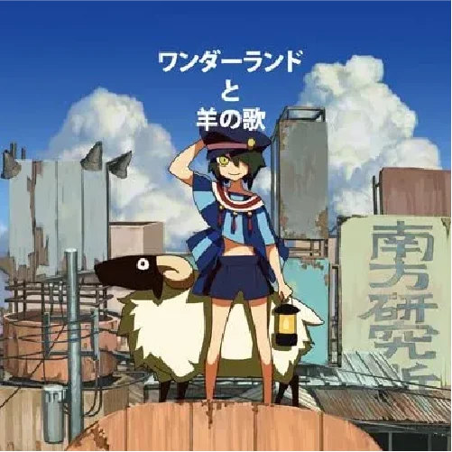
원더랜드와 양의 노래
· CD+DVD 싱글

· CD+DVD 싱글
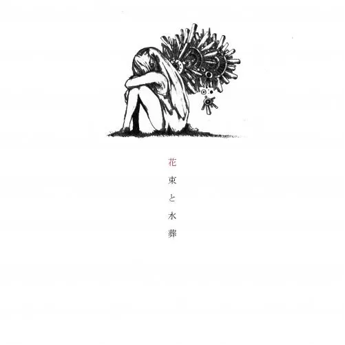
· 1st 앨범
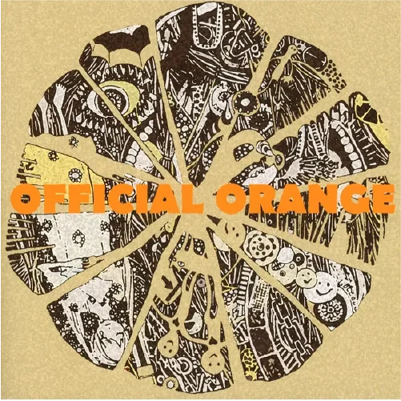
· 2nd 앨범
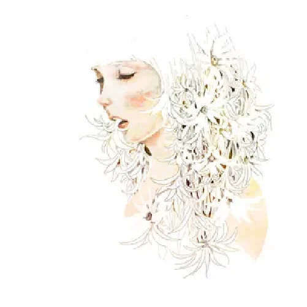
· 1st 싱글
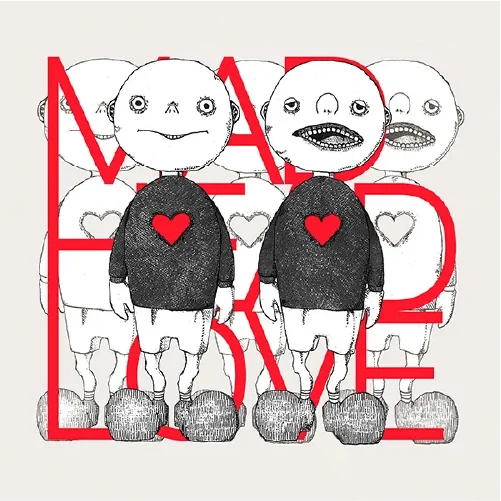
· 2nd 싱글
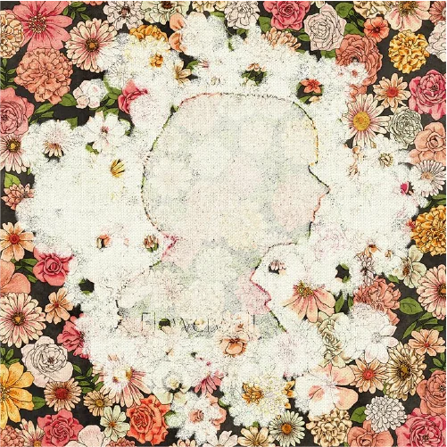
· 3rd 싱글
· 4th 싱글
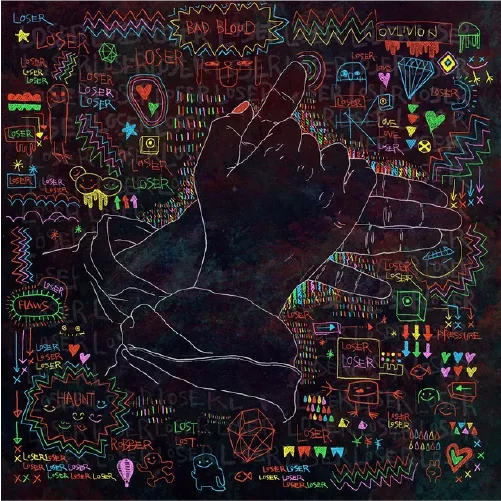
· 5th 싱글
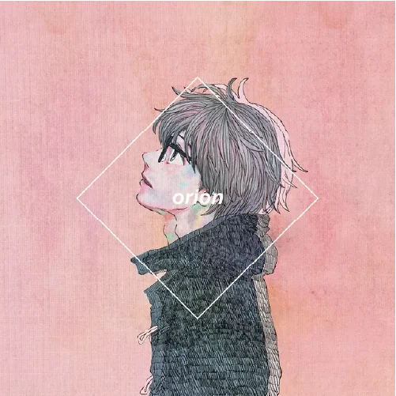
· 6th 싱글
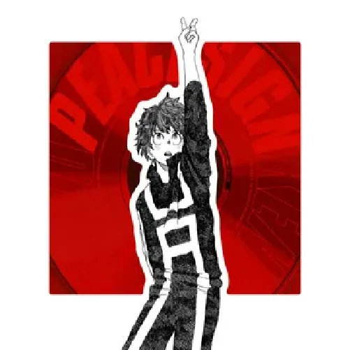
· 7th 싱글
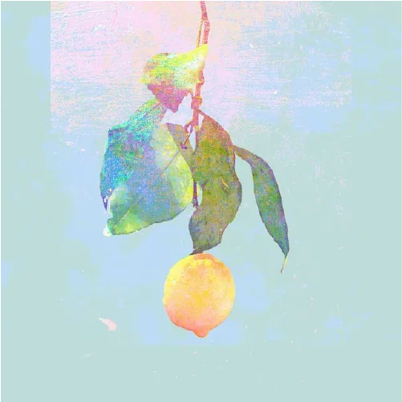
· 8th 싱글
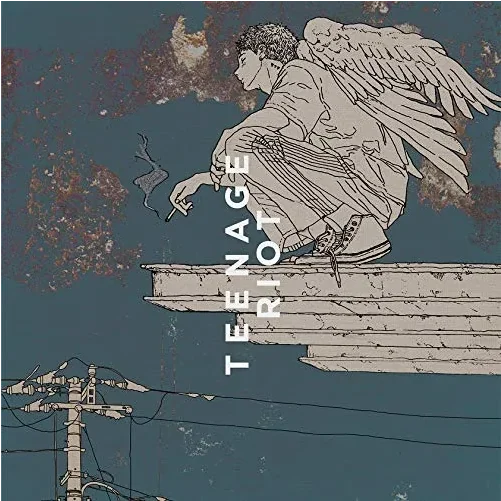
· 9th 싱글
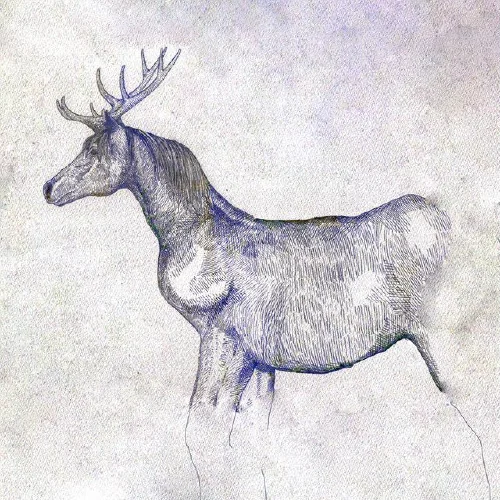
· 10th 싱글
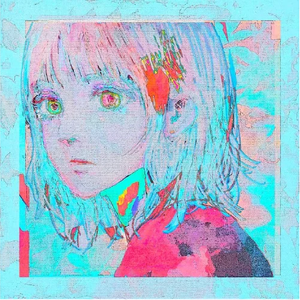
· 11th 싱글
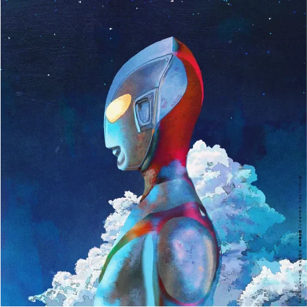
· 12th 싱글
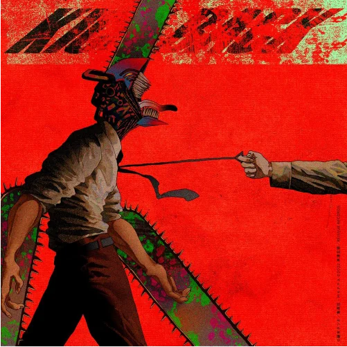
· 13th 싱글
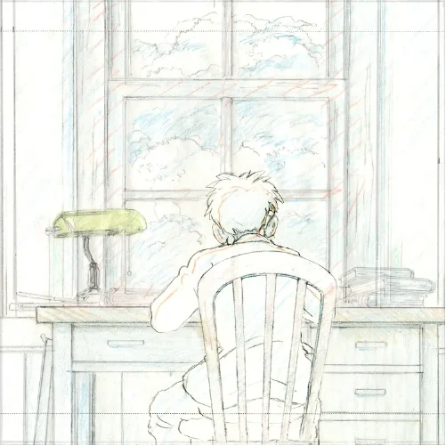
· 14th 싱글
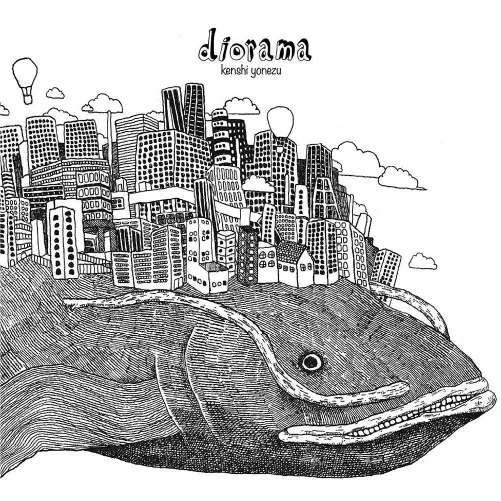
· 1st 앨범
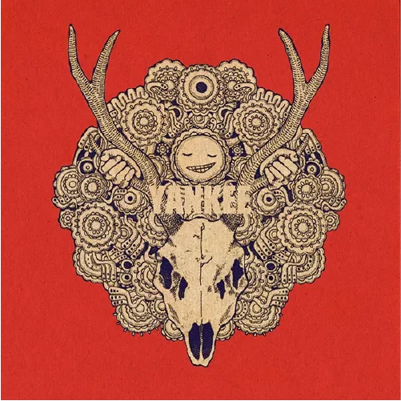
· 2nd 앨범
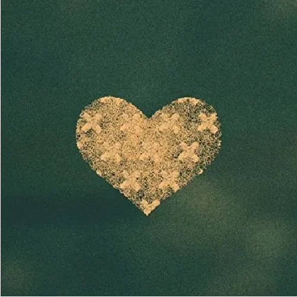
· 3rd 앨범
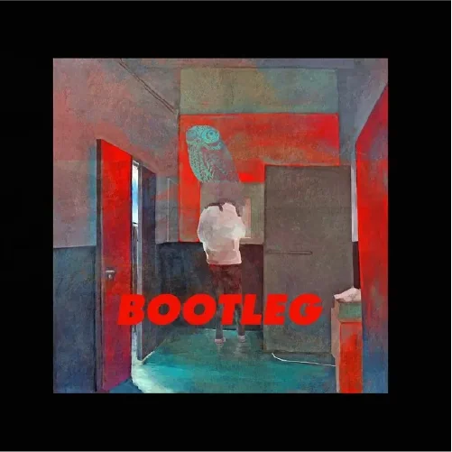
· 4th 앨범
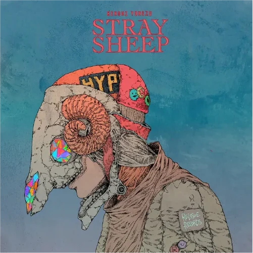
· 5th 앨범
· 6th 앨범
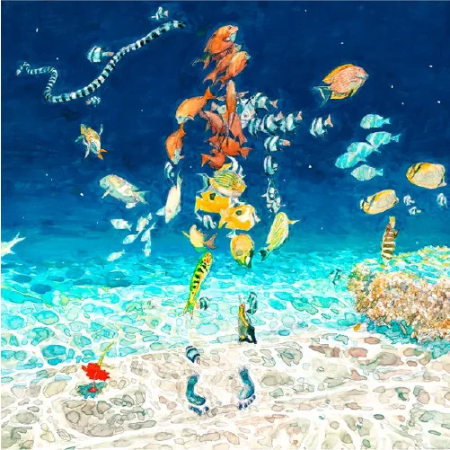
· 디지털 싱글
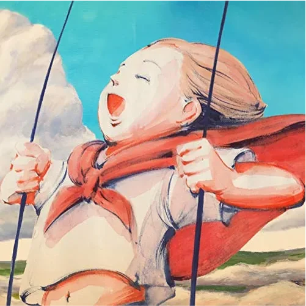
· 디지털 싱글
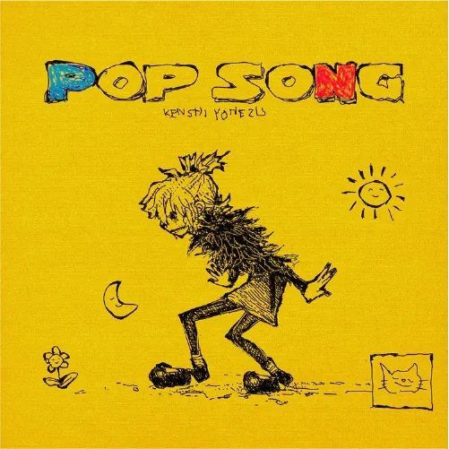
· 디지털 싱글
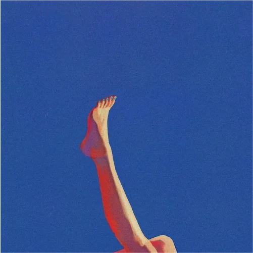
· 디지털 싱글
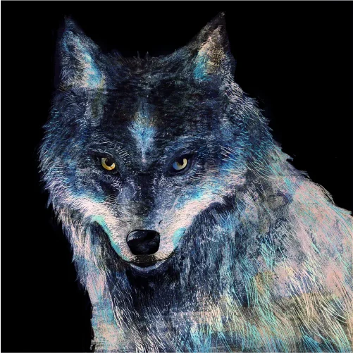
· 디지털 싱글
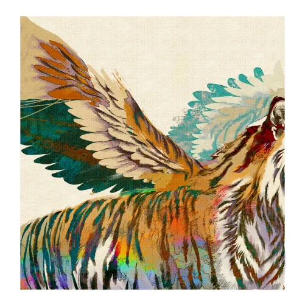
· 디지털 싱글
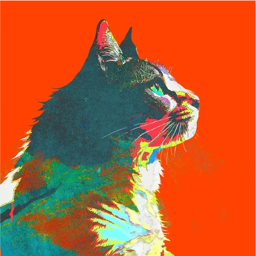
· 디지털 싱글
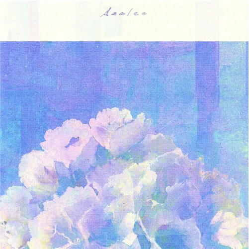
· 디지털 싱글

· 15번째 싱글

· 디지털 싱글

· 16번째 싱글

· 디지털 싱글

· 디지털 싱글

· 디지털 싱글